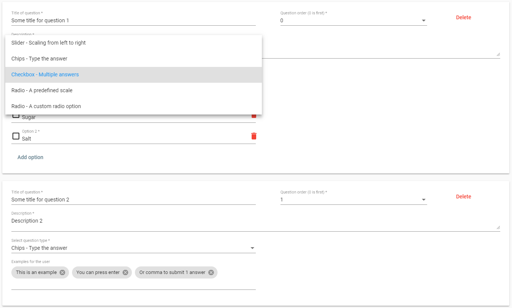
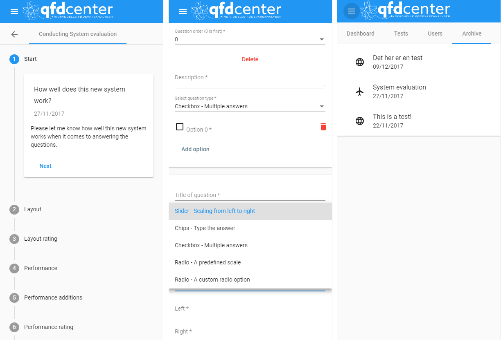

As the title says, we (a friend of mine from AAU and his uncle who found this task for us) were tasked to create a website that includes all the different functions he is currently using but instead of it being split, it should be collected on one site.
(Logo of QFDCenter)
The most important core functions were to create a way for the customer to create a questionnaire and publish it for specific timeframes and collect the data and create statistical data automatically for his customers. His customers are companies who are looking for people to taste and provide feedback for their food products. They are interested in data explaining to them whether their current product is bad or good and what that is.
(Screencap of the results of one question from a demo questionnaire)
Some of these companies include airline companies who wants to get feedback on their food served on
the planes. However, to get accurate data and the experience of the tester, it should be tested
while in the air, thus requiring the website to be able to collect the data offline and send it once
a connection is re-established. A mobile app could be made to solve this single purpose, we however
decided that diving into progressive web apps is a better decision for future iterations and ease of
development forthgoing.
Not having to split up the system to several applications does
make some parts of the process easier, but not all web features are supported on every device and we
must cover both desktop Mac and Windows users as well as Android and iOS on the mobile devices,
sometimes complicating the task and limiting options.
So, a lot of work has gone into how the creation of the questionnaires are done so that the tester is able to create almost anything with the tools that we have created based on what is asked of us. There are currently no limits to how long the questionnaire can be. You can reorder the questions created, you can delete individual questions as well as individual options in a question and the tool allows you to select when the test is open for answers. These are all options part of the prototype and not necessarily a presentation of the final product.
(Screencap of the creation of a questionnaire)
But creation and maintenance of questionnaires are of no use if there is no way to collect the data. Based on the test id of the questionnaire and whether it is opened or already answered by the user, the user gets a list of currently active tests and can complete it by following the instructions in the questionnaire. The questions are separated so that it does not fatigue the user with possibly 100s of options.
(Screencap of the users page for answering the questionnaire on desktop)
As mentioned earlier it was important for us to make sure that the website runs on all modern devices, which means that the website is responsive (as to be expected of modern websites) and so content scales and changes depending on the device used.
(Screencaps of some of the layouts for mobile devices)
The page is designed in a way so that all functions and layout is recognizable and easily understandable when you switch between using it on the phone, desktop or tablet. This is to avoid confusing the user while navigating the page and hopefully enhance the experience. We do have to hide some of the navigation for the mobile devices to not destroy precious screen space, but we are able to show it all on wider screens to make sure getting around on the page is fast and efficient.
(Screencap of the whole page on the tests page)
So, I hope you enjoyed the little showcase of what has been made for QFDCenter so far. There is a live demo at https://work.bruhno.com/qfdcenter/angular/ but the admin tools are of course restricted from the public but the ability to answer the questionnaires are possible with a normal user. As you can probably guess from the URL, the website is made with Angular and we are using Firebase for our back-end, handling authentication, database with Firestore and storage with more to come.
(Screencap of the whole page on the tests page)
(Screencap of the whole page on the tests page)
(Screencap of the whole page on the tests page)
(Screencap of the whole page on the tests page)